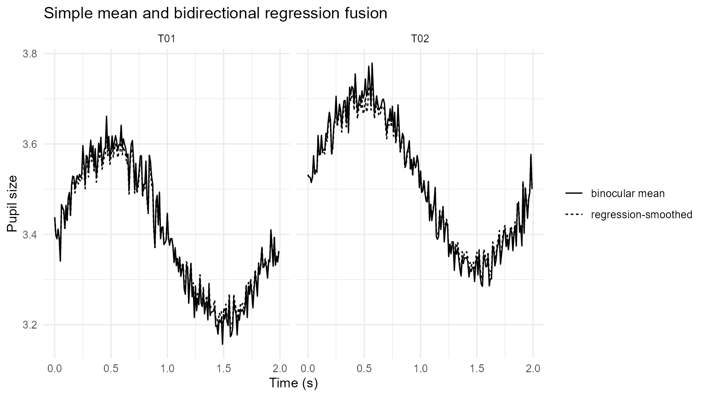
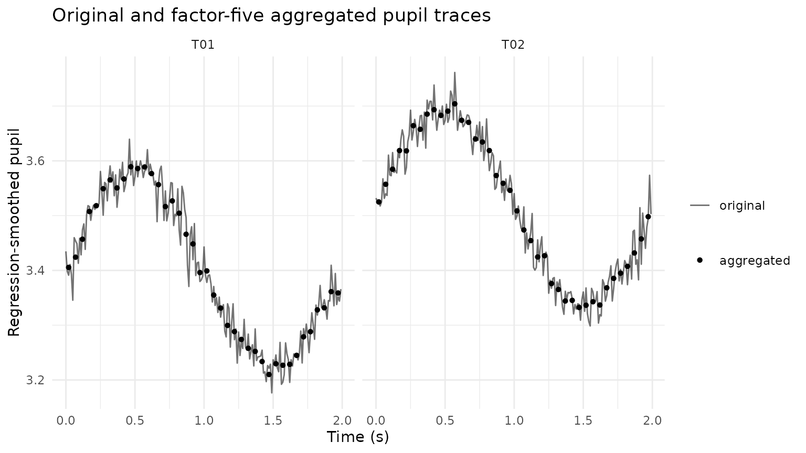

Binocular Pupil Fusion and Downsampling
Source:vignettes/articles/binocular-pupil-processing.Rmd
binocular-pupil-processing.RmdPurpose
This article demonstrates three lightweight binocular pupil operations:
- sample-wise left/right averaging;
- cross-eye regression as a diagnostic smoothing and fusion method;
- integer-factor aggregation for lower-frequency analysis tables.
Regression-based fusion is a preprocessing device, not a causal model. It should be compared with the simple binocular mean and inspected visually.
Simulate binocular pupil measurements
set.seed(2026)
n <- 400
pupil <- data.frame(
USER_ID = "P01",
trial = rep(c("T01", "T02"), each = n / 2),
TIME = rep(seq(0, 1.99, by = 0.01), 2)
)
latent <- 3.4 +
0.20 * sin(2 * pi * pupil$TIME / 2) +
ifelse(pupil$trial == "T02", 0.12, 0)
pupil$LPupil <- latent + rnorm(n, 0, 0.035)
pupil$RPupil <- 0.10 + 0.97 * latent + rnorm(n, 0, 0.045)
pupil$LPupil[85:90] <- NA_real_
pupil$RPupil[250:255] <- NA_real_Mean binocular pupil
pupil_mean <- mean_gazepoint_pupil(
pupil,
lp_col = "LPupil",
rp_col = "RPupil"
)
head(pupil_mean)
#> USER_ID trial TIME LPupil RPupil mean_pupil
#> 1 P01 T01 0.00 3.418221 3.458160 3.438190
#> 2 P01 T01 0.01 3.368493 3.428966 3.398729
#> 3 P01 T01 0.02 3.417431 3.362638 3.390035
#> 4 P01 T01 0.03 3.415855 3.407699 3.411777
#> 5 P01 T01 0.04 3.401734 3.381400 3.391567
#> 6 P01 T01 0.05 3.343224 3.338307 3.340765Regression-smoothed binocular trace
pupil_regressed <- regress_gazepoint_pupils(
pupil_mean,
lp_col = "LPupil",
rp_col = "RPupil",
group_cols = "trial",
direction = "bidirectional",
min_complete = 20
)
ggplot(pupil_regressed, aes(TIME)) +
geom_line(aes(y = mean_pupil, linetype = "binocular mean")) +
geom_line(
aes(y = pupil_regressed, linetype = "regression-smoothed")
) +
facet_wrap(~ trial) +
labs(
x = "Time (s)",
y = "Pupil size",
linetype = NULL,
title = "Simple mean and bidirectional regression fusion"
) +
theme_minimal()
Downsample by aggregation
downsampled <- downsample_gazepoint_pupil(
pupil_regressed,
factor = 5,
pupil_cols = c("mean_pupil", "pupil_regressed"),
group_cols = "trial",
method = "mean"
)
downsampled[c(
"USER_ID", "trial", "TIME", "mean_pupil",
"pupil_regressed", "n_samples_aggregated"
)]
#> USER_ID trial TIME mean_pupil pupil_regressed n_samples_aggregated
#> 1 P01 T01 0.02 3.406060 3.405537 5
#> 2 P01 T01 0.07 3.426607 3.424201 5
#> 3 P01 T01 0.12 3.462294 3.456954 5
#> 4 P01 T01 0.17 3.517100 3.507570 5
#> 5 P01 T01 0.22 3.528636 3.518122 5
#> 6 P01 T01 0.27 3.561813 3.549142 5
#> 7 P01 T01 0.32 3.580049 3.565231 5
#> 8 P01 T01 0.37 3.563482 3.550576 5
#> 9 P01 T01 0.42 3.581730 3.566917 5
#> 10 P01 T01 0.47 3.605743 3.589242 5
#> 11 P01 T01 0.52 3.602805 3.586000 5
#> 12 P01 T01 0.57 3.606107 3.588827 5
#> 13 P01 T01 0.62 3.592798 3.576783 5
#> 14 P01 T01 0.67 3.570636 3.556598 5
#> 15 P01 T01 0.72 3.526235 3.516570 5
#> 16 P01 T01 0.77 3.537948 3.526896 5
#> 17 P01 T01 0.82 3.515365 3.504422 5
#> 18 P01 T01 0.87 3.477966 3.466015 5
#> 19 P01 T01 0.92 3.452920 3.448370 5
#> 20 P01 T01 0.97 3.395671 3.396116 5
#> 21 P01 T01 1.02 3.399185 3.399106 5
#> 22 P01 T01 1.07 3.351154 3.355010 5
#> 23 P01 T01 1.12 3.325569 3.331277 5
#> 24 P01 T01 1.17 3.290389 3.299622 5
#> 25 P01 T01 1.22 3.278119 3.288305 5
#> 26 P01 T01 1.27 3.262955 3.274031 5
#> 27 P01 T01 1.32 3.245099 3.257837 5
#> 28 P01 T01 1.37 3.239445 3.252198 5
#> 29 P01 T01 1.42 3.219079 3.233713 5
#> 30 P01 T01 1.47 3.193245 3.210037 5
#> 31 P01 T01 1.52 3.214488 3.229603 5
#> 32 P01 T01 1.57 3.211649 3.226858 5
#> 33 P01 T01 1.62 3.213432 3.228600 5
#> 34 P01 T01 1.67 3.231430 3.244935 5
#> 35 P01 T01 1.72 3.268532 3.278790 5
#> 36 P01 T01 1.77 3.278487 3.288201 5
#> 37 P01 T01 1.82 3.321847 3.327963 5
#> 38 P01 T01 1.87 3.325475 3.331715 5
#> 39 P01 T01 1.92 3.357753 3.361272 5
#> 40 P01 T01 1.97 3.354897 3.358814 5
#> 41 P01 T02 0.02 3.525127 3.525016 5
#> 42 P01 T02 0.07 3.561779 3.557225 5
#> 43 P01 T02 0.12 3.589581 3.584771 5
#> 44 P01 T02 0.17 3.629075 3.618805 5
#> 45 P01 T02 0.22 3.625470 3.618239 5
#> 46 P01 T02 0.27 3.675440 3.664186 5
#> 47 P01 T02 0.32 3.669991 3.657636 5
#> 48 P01 T02 0.37 3.699209 3.685331 5
#> 49 P01 T02 0.42 3.708360 3.693398 5
#> 50 P01 T02 0.47 3.701380 3.682958 5
#> 51 P01 T02 0.52 3.729342 3.690737 5
#> 52 P01 T02 0.57 3.717891 3.704117 5
#> 53 P01 T02 0.62 3.687321 3.674037 5
#> 54 P01 T02 0.67 3.683062 3.670281 5
#> 55 P01 T02 0.72 3.651660 3.639844 5
#> 56 P01 T02 0.77 3.643433 3.634425 5
#> 57 P01 T02 0.82 3.627110 3.618820 5
#> 58 P01 T02 0.87 3.578635 3.573191 5
#> 59 P01 T02 0.92 3.564069 3.559027 5
#> 60 P01 T02 0.97 3.548015 3.546169 5
#> 61 P01 T02 1.02 3.507681 3.508686 5
#> 62 P01 T02 1.07 3.471854 3.473871 5
#> 63 P01 T02 1.12 3.448815 3.454421 5
#> 64 P01 T02 1.17 3.415969 3.424549 5
#> 65 P01 T02 1.22 3.420349 3.426825 5
#> 66 P01 T02 1.27 3.367567 3.376044 5
#> 67 P01 T02 1.32 3.351691 3.365217 5
#> 68 P01 T02 1.37 3.332046 3.344191 5
#> 69 P01 T02 1.42 3.332714 3.345344 5
#> 70 P01 T02 1.47 3.320529 3.332392 5
#> 71 P01 T02 1.52 3.322918 3.336429 5
#> 72 P01 T02 1.57 3.328608 3.342867 5
#> 73 P01 T02 1.62 3.322809 3.336897 5
#> 74 P01 T02 1.67 3.357324 3.368255 5
#> 75 P01 T02 1.72 3.376063 3.385486 5
#> 76 P01 T02 1.77 3.385886 3.394967 5
#> 77 P01 T02 1.82 3.400034 3.407483 5
#> 78 P01 T02 1.87 3.426062 3.431870 5
#> 79 P01 T02 1.92 3.453486 3.457513 5
#> 80 P01 T02 1.97 3.496755 3.498066 5
ggplot() +
geom_line(
data = pupil_regressed,
aes(TIME, pupil_regressed, linetype = "original"),
alpha = 0.55
) +
geom_point(
data = downsampled,
aes(TIME, pupil_regressed, shape = "aggregated"),
size = 1.5
) +
facet_wrap(~ trial) +
labs(
x = "Time (s)",
y = "Regression-smoothed pupil",
linetype = NULL,
shape = NULL,
title = "Original and factor-five aggregated pupil traces"
) +
theme_minimal()